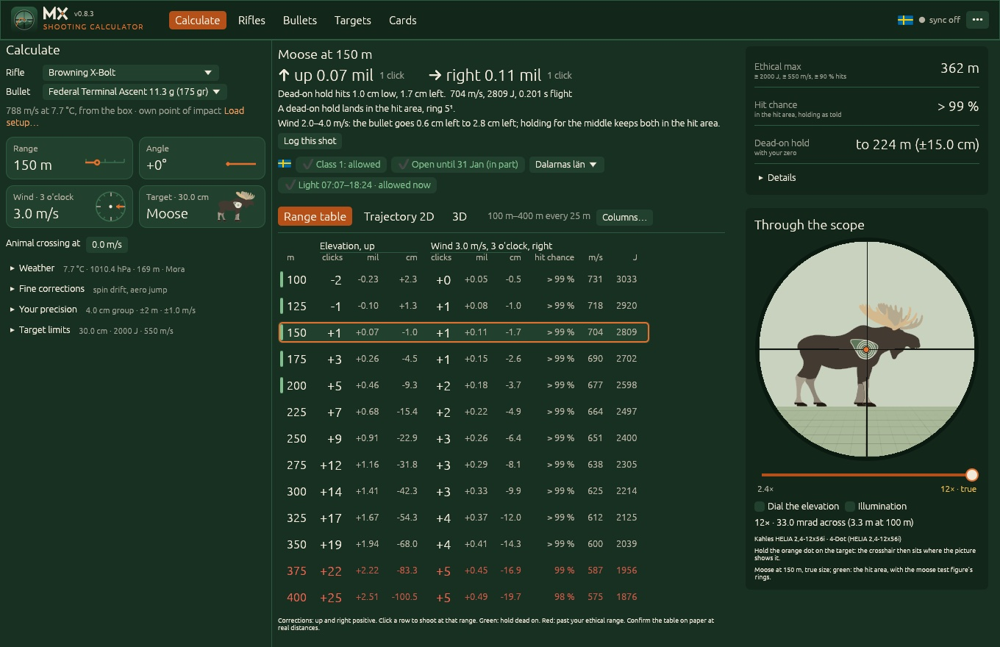
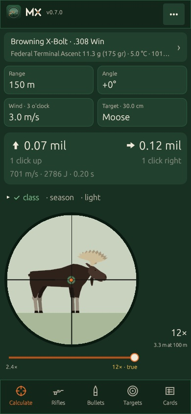
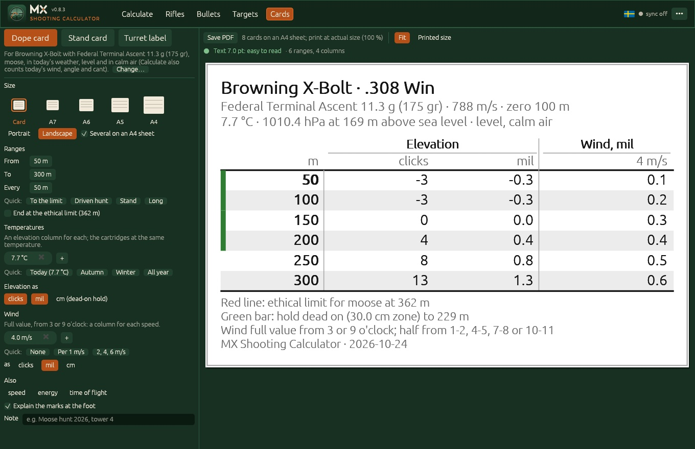

Rifle ballistics for hunting and target shooting
Your own rifles and bullets, the holds for today's weather, the ethical range and the hunting rules where you hunt. In English, Swedish and Finnish. Free, and your data stays on your devices.
Version @VERSION@ for macOS, Windows and Linux. On a phone it runs in the browser and installs to the home screen.

Download
Version @VERSION@ · what's new
macOS
Apple silicon and Intel, macOS 11 or later
Download .dmgDrag the app to Applications. It isn't notarized yet: the first time, open System Settings → Privacy & Security and choose Open Anyway.
Windows
64-bit Windows 10 or 11
Download .zipUnzip and run MX Shooting Calculator.exe. If SmartScreen warns about an unknown publisher, choose More info → Run anyway.
Linux
x86-64, X11 or Wayland
Download .tar.gzUnpack, then run ./install.sh for a menu entry, or ./mxsc straight from the folder.
Phone and browser
iPhone, Android, or any computer
Open the appTo keep it on a phone: Share → Add to Home Screen (iPhone), or Install app (Android). It works offline.
Earlier versions and release notes are on GitHub. Sync keeps your rifles and bullets the same on all your devices.
What it does
For a hunter at the stand and for a target shooter at the range.
Holds for today
Up and right in mil or MOA and in clicks, for the range, angle, wind and weather, with spin drift and aerodynamic jump. Weather from your position or a place.
Ethical range
Where the bullet still has the energy and speed the game needs, and how far a dead-on hold stays in the vital zone. Target shooters can switch it all off.
The rules where you hunt
Swedish and Finnish legal ammunition classes, the season in your county and today's shooting light, worked out for where you are.
Through your scope
The reticle of your own scope with the animal or target at true size, so you see the hold. Trajectory in 2D and 3D.
Cards and turret labels
Printable dope cards, stand cards with your landmarks, and a label for the elevation turret with the ranges at their clicks.
Your rifles and loads
A catalog of ammunition, bullets and scopes; chronograph files from Garmin, LabRadar and MagnetoSpeed; truing to a long shot; Strelok Pro import.

